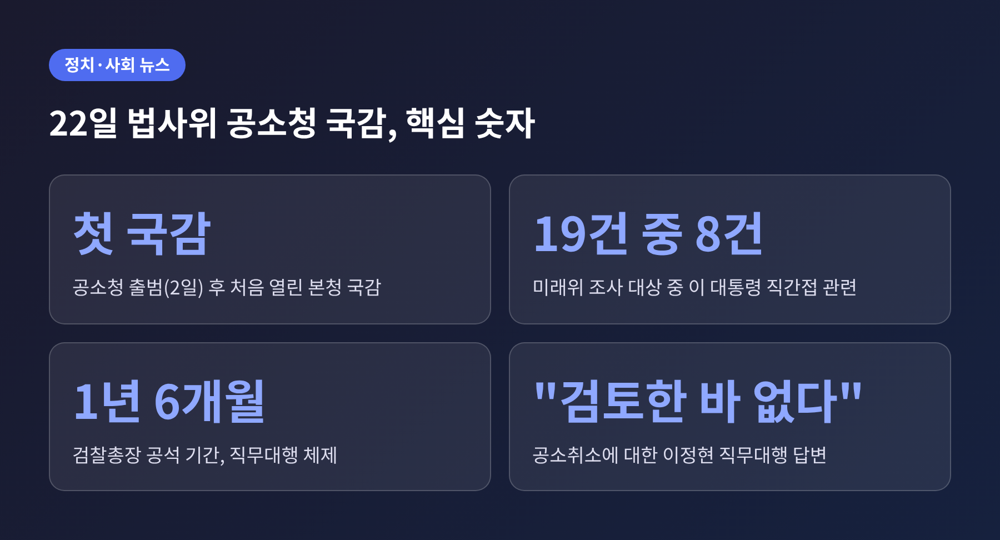
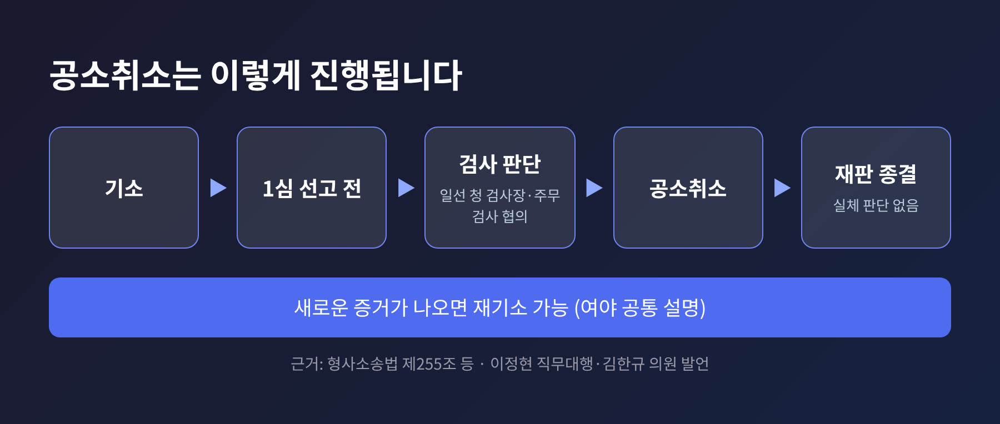
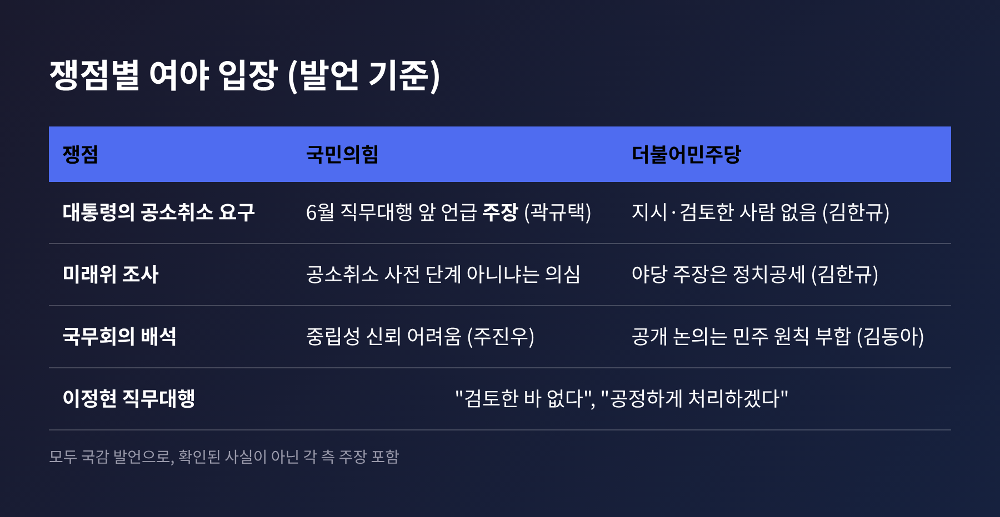
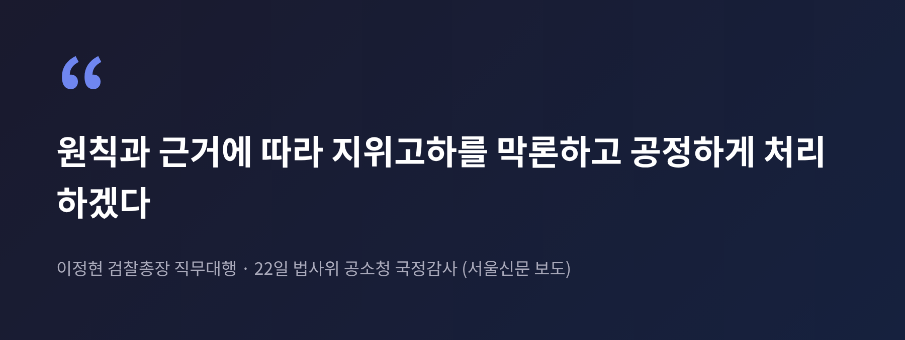
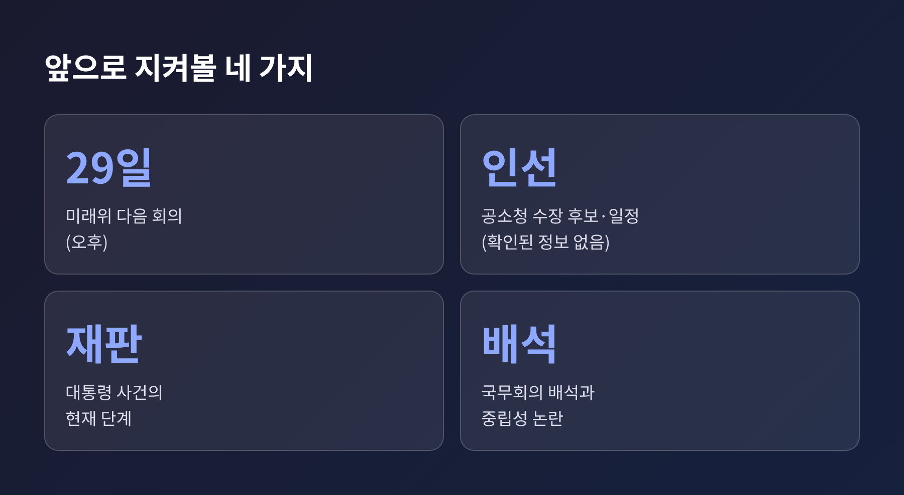

법사위 공소취소 공방 정리, 공소청 첫 국감에서 오간 주장과 답변
오늘은 22일 국회 법제사법위원회 공소청 국정감사에서 불붙은 '공소취소' 공방을 정리해 보려 합니다. 핵심은 세 가지입니다. 이재명 대통령 관련 사건의 공소취소 여부, 공소청 수장 자리, 그리고 형사사법 체계 개편 이후의 사건 처리 문제입니다. 이정현 검찰총장 직무대행은 공소취소를 "검토한 바 없다"고 답했습니다.

■ 무슨 일이 있었나
법사위(위원장 서영교)는 22일 오전 10시, 여의도 국회에서 공소청 본청 국정감사를 열었습니다. 공소청은 이달 2일 검찰청이 폐지되면서 출범한 기관입니다. 이번이 출범 후 첫 국감이었습니다.
이날은 10개 상임위가 동시에 국감을 진행했고, 상당수가 마무리 단계인 종합감사였습니다. 사전 보도들은 법사위의 주요 쟁점으로 대통령 관련 사건 공소취소, 공소청 초대 수장 인선, 형사사법체계 개편에 따른 사건 처리 지연을 꼽았습니다.
증인석에는 이정현 검찰총장 직무대행이 앉았습니다. 검찰총장 자리는 1년 6개월째 비어 있고, 이 직무대행은 유력 후보로 거론됩니다. 더팩트 보도에 따른 설명입니다.
■ 공소취소란 무엇인가
공소취소는 검사가 이미 법원에 제기한 기소를 스스로 거두는 일입니다. 형사소송법 제255조 등에 따라 1심 판결이 선고되기 전까지 가능합니다. 취소되면 재판은 실체 판단 없이 끝납니다. 새로운 증거가 나오면 다시 기소할 수는 있습니다.
이 설명은 여야가 크게 다투지 않는 부분입니다. 더불어민주당 김한규 의원도 국감에서 "1심 판결이 나오지 않은 사건만 취소할 수 있고, 새 증거가 나오면 재기소가 가능하다"는 취지로 말했습니다.

그렇다면 왜 지금 논란일까요. 이 대통령에게는 대장동·위례·백현동 개발 의혹, 쌍방울 대북송금 사건 등 여러 재판이 있습니다. 헤럴드경제가 전한 지난해 11월 국민의힘 측 설명에 따르면 5건 12개 혐의로 재판이 중지된 상태이고, 그중 1심 계류 3건이 취소 가능 대상이라는 것이 국민의힘 주장입니다. 이후 재판 진행 상황은 이번 취재에서 확인하지 못했습니다.
여기에 법무부 산하 검찰인권존중미래위원회(미래위)가 올해 6월 출범했습니다. 미래위 진상조사단은 검찰 수사 사례 19건을 골랐고, 그중 8건이 이 대통령과 직간접으로 관련됩니다. 야당은 이 조사를 공소취소의 사전 단계가 아니냐며 의심하고 있습니다.
■ 여야는 무엇을 주장했나
국민의힘 곽규택 의원은 이 대통령이 지난 6월 당시 검찰총장 직무대행이 있는 자리에서 사과와 공소취소를 언급했다고 주장했습니다. 국무회의에서도 압박이 반복된다고 비판했습니다. 박형수 의원은 대통령이 자기 사건의 공소를 취소하지 않겠다고 밝히라고 촉구했습니다. 다만 이 발언 내용을 뒷받침하는 자료는 보도에서 확인되지 않았습니다.
민주당은 다르게 봤습니다. 김한규 의원은 "공소취소를 지시하거나 검토한 사람이 없다"며 야당의 공세를 정치적 공격으로 규정했습니다.

흥미로운 장면도 있었습니다. 국민의힘 윤상현 의원은 생성형 AI 제미나이에 공소취소를 물었더니 국민 신뢰가 떨어졌다는 답이 나왔다고 소개했습니다. 서영교 위원장은 자신이 받은 답은 달랐다고 응수했습니다. 기사들은 이 AI 답변의 정확성을 검증하지 않았습니다.
■ 이정현 직무대행은 어떻게 답했나
이 직무대행은 "검토한 바 없다"고 답했습니다. 대통령이나 법무부에서 검토 요청을 받은 적도, 일선 청에 검토를 지시한 적도 없다고 했습니다. 공소취소를 결정하는 주체는 해당 일선 청 검사장과 주무 검사의 협의라는 설명도 보탰습니다.
대통령이 요청하면 응하겠느냐는 질문에는 "원칙과 근거에 따라 지위고하를 막론하고 공정하게 처리하겠다"고 답했습니다.

지난달 첫 출근길에 "진상조사 결과를 살펴봐야 할 것 같다"고 한 말이 여지를 남겼다는 해석이 있었습니다. 이 직무대행은 이를 "극히 원론적인 입장"이라고 설명했습니다. 미래위의 자료 제출 요구는 거절했습니다. 조사는 감사를 전제로 한 것이고, 결과 보고서는 법무부에 전달됐다는 이유였습니다.
미래위는 지난 15일 첫 3건에 대해 보고를 받았습니다. 보도에 따르면 검찰의 위법 여부를 판단하기 어렵다는 결론이었고, 위원회 관계자는 보완이 필요하다고 했습니다. 다음 회의는 29일입니다.
■ 공소청장 인선과 국무회의 배석
공소청 수장의 정치적 중립성도 도마에 올랐습니다. 국민의힘 주진우 의원은 수장이 국무회의에 배석하는 한 중립성을 믿기 어렵다고 주장했습니다. 민주당 김동아 의원은 공개된 국무회의에서 중대 범죄 현안을 논의하는 것이 민주주의 원칙에 맞는다는 취지로 맞섰습니다.
이 직무대행은 여러 차례 국무회의에 참석했지만 구체적 사건을 언급한 적은 없다고 했습니다. 공정성과 독립성에 대한 우려는 법무부를 통해 전달하겠다고도 했습니다.
초대 수장의 구체적 후보와 일정은 이번 취재에서 확인되지 않았습니다. 사건 처리 지연 문제 역시 사전 보도가 쟁점으로 예고했을 뿐, 지연 건수 같은 수치는 찾지 못했습니다. 이 두 부분은 아직 공개된 근거가 부족합니다.
■ 같은 날 법사위에서 함께 오간 공방
공소취소만 다룬 자리는 아니었습니다. 2019년 북한 어민 강제북송 사건을 두고도 여야가 고성을 주고받았습니다. 정의용 전 국가안보실장이 항소심에서 집행유예를 선고받은 직후였습니다. 민주당 박지원 의원은 어민 2명이 동료 16명을 살해했다는 주장을 언급했고, 국민의힘 김태규 의원은 그들도 "대한민국 국민"이라고 반박했습니다.
문재인 전 대통령 뇌물 수사에 대한 평가도 갈렸습니다. 민주당 김의겸 의원은 정치 표적 수사라고 했고, 국민의힘 주진우 의원은 이 직무대행의 평가가 절차상 문제를 시사한다고 읽었습니다. 한동훈 무소속 의원은 기소계획서를 공개했고, 이 직무대행은 유출 경위에 수사가 필요하다고 답했습니다.
공소취소 공방이 이런 사건들과 한 자리에서 겹쳐 나온 점이 눈에 띕니다. 어느 사건을 기소하고 어느 사건을 거둘지가 곧 정치적 쟁점이 되는 국면이라는 뜻이기도 합니다.
■ 앞으로 무엇을 지켜볼까
예전에는 검찰이 수사와 기소를 함께 쥐었습니다. 지금은 공소청이 기소와 공소 유지를 맡는 구조로 바뀌었습니다. 그만큼 공소취소 같은 기소 단계의 결정을 누가, 어떤 절차로 내리는지가 더 중요해졌습니다.
지켜볼 대목은 세 가지입니다. 29일 미래위 회의에서 나올 추가 결과, 공소청 수장 인선의 진행, 그리고 대통령 재판의 현재 단계입니다. 야당은 공소취소 원천 차단을 주장해 왔고, 여당은 검토 자체가 없다는 입장입니다. 어느 쪽 주장이 맞는지는 이후 실제 조치와 공개 자료로 가려질 일입니다.

정리하면 이렇습니다. 22일 국감은 공소취소가 실제로 추진되고 있는가를 두고 주장과 부인이 맞선 자리였습니다.
"주장은 많았고 확인된 사실은 적었다"는 점이 이날의 요약에 가깝습니다. 공개된 근거가 쌓이기 전까지는 어느 한쪽의 말을 단정하지 않고 지켜보는 편이 낫겠다는 생각입니다.
출처: 경향신문, 뉴스프리존, 파이낸셜뉴스(뉴스1), 더팩트, 매일일보, 스페셜타임스, 글로벌뉴스통신GNA, 서울신문, 헤럴드경제(2025-11-12). 일자는 모두 2026-10-22 기준, 별도 표기 외.